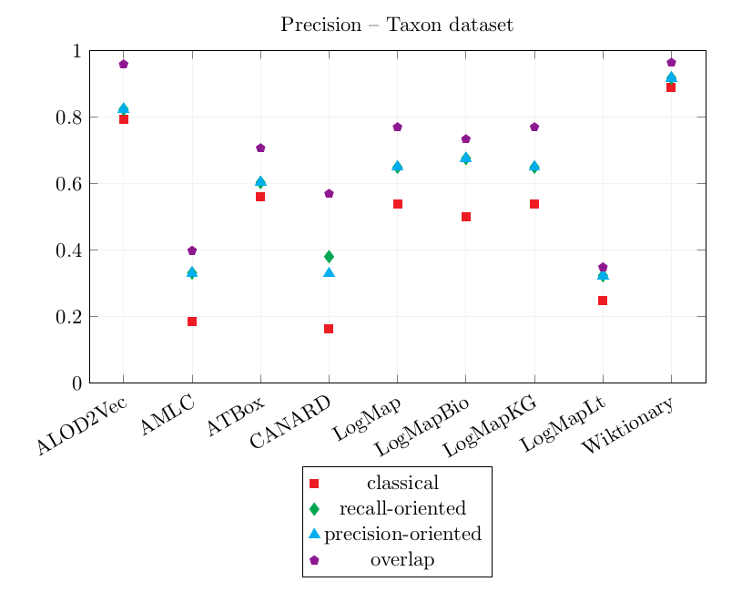
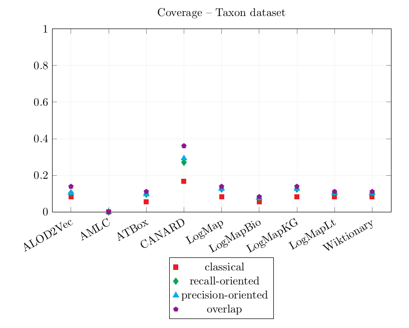

The output alignments can be downloaded here.
The main focus of the evaluation here is to be task-oriented. First, we manually evaluate the quality of the generated alignments, in terms of precision. Second, we evaluate the generated correspondences using a SPARQL query rewriting system and manually measure their ability of answering a set of queries over each dataset.
We excluded from the evaluation the generated correspondences implying identical IRIs such as owl:Class = owl:Class. As instance matching is not the focus of this evaluation, we do not consider instance correspondences. In order to measure the Precision of the output alignments, each correspondence (except if in the categories mentioned above) was manually verified and classified:
This gives 4 Precision scores:
The confidence of the correspondence is not taken into account. All the systems output only equivalence correspondences so the relation of the correspondence was not considered in the evaluation.
6 reference equivalent queries per ontology are used to assess how an alignment covers them. The alignment is used to rewrite every reference. For each reference query, the best rewritten query is classified as equivalent, more specific, more general or overlapping.
The same scores as for the Precision are calculated for the Coverage:
All the other systems (AGM, AML, CANARD, FCAMap-KG, LogMap, LogMapBio, LogMapLt, ONTMAT1, POMAP++) output at least an alignment. ONTMAT1 only output correspondences with identical URIs which were filtered for the evaluation. The only system to output complex correspondences was CANARD.
This year, every system was evaluated on their oriented alignment output, especially for the Coverage calculation. For example, let's take a set of equivalent correspondences: Q={SELECT ?x WHERE{ ?x a agtx:Taxon}, SELECT ?x WHERE{ ?x a dbo:Species}}. If an output alignment agronomicTaxon-dbpedia contains (agtx:Taxon,dbo:Species,≡) but the alignment dbpedia-agronomicTaxon does NOT contain (dbo:Species, agtx:Taxon, ≡). The coverage score of Q for the pair agronomicTaxon-dbpedia is 1 but the coverage score of Q for dbpedia-agronomicTaxon is 0. Last year the evaluation was non-oriented, so the coverage score of Q would be the same (1.0) for agronomicTaxon-dbpedia and dbpedia-agronomicTaxon.
The systems have been executed on a Ubuntu 16.04 machine configured with 16GB of RAM running under a i7-4790K CPU 4.00GHz x 8 processors. All measurements are based on a single run.
Number of correspondences per type per system and runtime over the track.
"identical" shows the number of correspondences which align two identical URIs, instance, the number of correspondences in which one of the members is an instance
| tool | ss | sc | cs | cc | identical | instance | tot | filtered | time (s) | time (min) |
|---|---|---|---|---|---|---|---|---|---|---|
| ALOD2Vec | 15 | 0 | 0 | 0 | 2 | 835 | 852 | 15 | 709 | 12 |
| AML | 0 | 0 | 0 | 0 | 0 | 151 | 151 | 0 | 101 | 17 |
| AMLC | 5 | 5 | 23 | 0 | 28 | 0 | 61 | 33 | 2461 | 41 |
| ATBox | 25 | 0 | 0 | 0 | 6 | 1056 | 1087 | 25 | 928 | 15 |
| CANARD | 111 | 1256 | 12 | 100 | 8 | 0 | 1487 | 1479 | 14833 | 247 |
| LogMap | 25 | 0 | 0 | 0 | 0 | 4986 | 5011 | 25 | 123 | 2 |
| LogMapBio | 14 | 0 | 0 | 0 | 2 | 0 | 16 | 14 | 239 | 4 |
| LogMapKG | 25 | 0 | 0 | 0 | 0 | 4986 | 5011 | 25 | 123 | 2 |
| LogMapLt | 46 | 0 | 0 | 0 | 764 | 4254 | 5064 | 46 | 46 | 1 |
| Wiktionary | 13 | 0 | 0 | 0 | 2 | 835 | 850 | 13 | 1983 | 33 |
Results over the Taxon dataset
| Precision | CQA Coverage | |||||||
|---|---|---|---|---|---|---|---|---|
| tool | equiv | more general | more specific | overlap | equiv | more general | more specific | overlap |
| ALOD2Vec | 0.792 | 0.823 | 0.823 | 0.958 | 0.083 | 0.104 | 0.104 | 0.139 |
| AMLC | 0.185 | 0.331 | 0.331 | 0.398 | 0.000 | 0.000 | 0.000 | 0.000 |
| ATBox | 0.561 | 0.603 | 0.603 | 0.706 | 0.056 | 0.097 | 0.097 | 0.111 |
| CANARD | 0.163 | 0.380 | 0.329 | 0.569 | 0.167 | 0.271 | 0.292 | 0.361 |
| LogMap | 0.538 | 0.649 | 0.649 | 0.769 | 0.083 | 0.125 | 0.125 | 0.139 |
| LogMapBio | 0.500 | 0.675 | 0.675 | 0.733 | 0.056 | 0.076 | 0.076 | 0.083 |
| LogMapKG | 0.538 | 0.649 | 0.649 | 0.769 | 0.083 | 0.125 | 0.125 | 0.139 |
| LogMapLt | 0.248 | 0.323 | 0.323 | 0.348 | 0.083 | 0.104 | 0.104 | 0.111 |
| Wiktionary | 0.889 | 0.917 | 0.917 | 0.963 | 0.083 | 0.104 | 0.104 | 0.111 |
Graphics of the best precision and coverage for each tool


Table showing the different results between 2019 and 2020.
| 2019 | 2020 | |||
|---|---|---|---|---|
| tool | total | filtered | total | filtered |
| AML | 30 | 30 | 151 | 0 |
| CANARD | 791 | 791 | 1487 | 1479 |
| LogMap | 96 | 38 | 5011 | 25 |
| LogMapBio | 90 | 36 | 16 | 14 |
| LogMapKG | 12868 | 34 | 5011 | 25 |
| LogMapLt | 10128 | 972 | 5064 | 46 |
Surprisingly, the tools output very different alignments in comparison to last year.
CANARD timed out over 4 out of 10 pairs. AMLC timed out over 1 pair.
As last year, LogMapLt output some interesting correspondences such as (http://dbpedia.org/ontology/genus, http://taxref.mnhn.fr/lod/taxrank/Genus, ≡) which could be used in a complex correspondence such as (Exists dbo:genus-, Exists txrf:hasRank.{txrftrk:Genus}, ≡). In this case, the correspondence was filtered out because it had an instance (txrftrk:Genus) as member.
The best CQA Coverage scores are obtained by CANARD and are very similar to last year's. However, its precision is worse than last year. This year, CANARD has output a lot of incorrect correspondences following the same pattern (combinations of skos:broader and skos:narrower) which caused its overlap Precision score to decrease significantly.
The results of LogMap, LogMapBio, LogMapKG and LogMapLt are sensibly the same as last year's.
Wiktionary and ALOD2Vec both achieve high precision scores and very similar CQA Coverage scores.
AMLC's correspondences did not cover the CQAs.